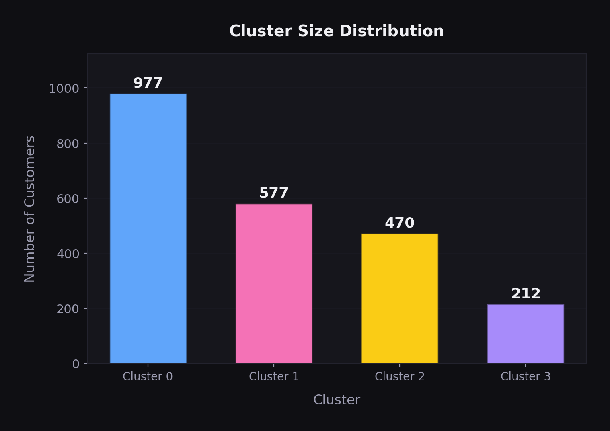
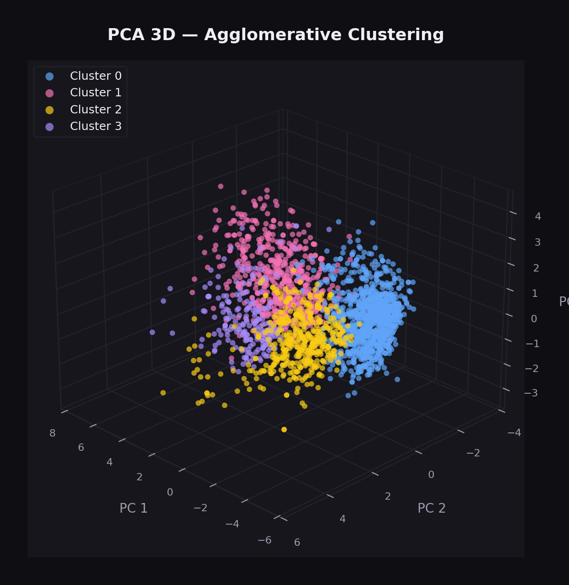
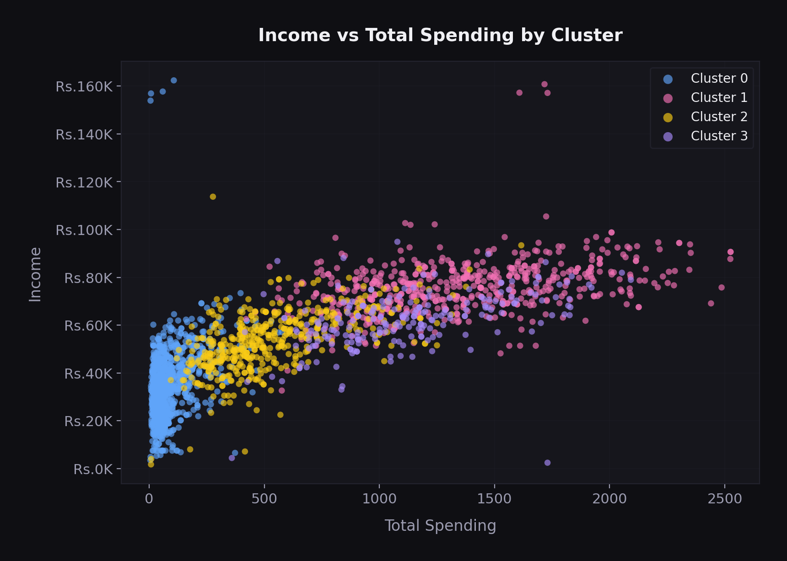
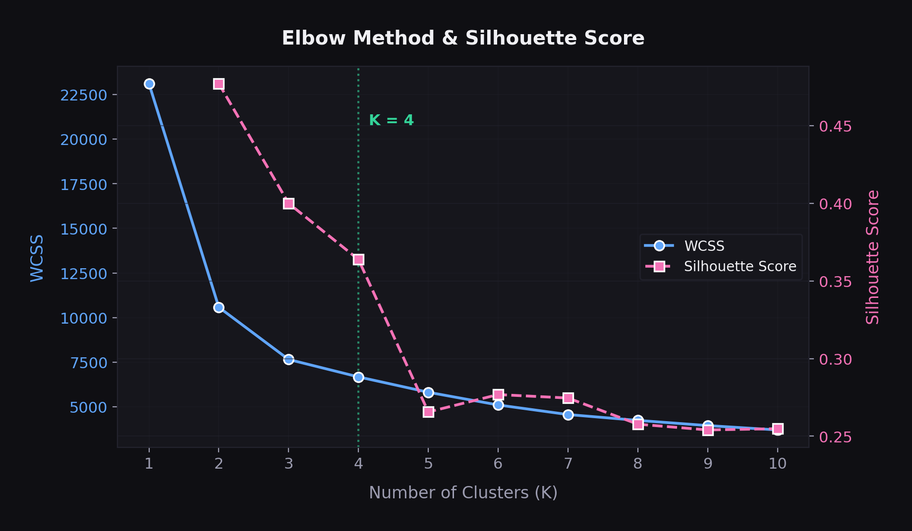
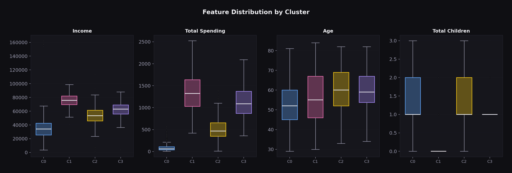

Unsupervised Machine Learning Project
Customer Segmentation using Unsupervised Machine Learning
"Not every customer behaves the same — so why treat every customer the same?"
Most retail businesses default to a one-size-fits-all approach — the same campaigns, the same offers, the same messaging for every customer. That's not just inefficient; it actively ignores the diversity sitting in the data.
This project asks a simple question: do natural customer segments emerge from purchasing behavior, demographics, and engagement data alone — without any predefined labels?
Using unsupervised learning on 2,240 customer records, SmartCart explores whether meaningful, interpretable groups exist in the data, and what those groups reveal about how different customers interact with a retail brand.
The dataset captures a rich profile of each customer — who they are, what they buy, how they shop, and how they respond to marketing.
Age, income, education level, marital status, number of children
Expenditure across wines, meats, fish, sweets, fruits, and gold products
Web purchases, catalog purchases, in-store purchases, and website visits
Acceptance of marketing campaigns 1 through 5, plus the most recent campaign
Customer tenure, recency of last purchase, total number of deals purchased
From raw data to interpretable customer segments — a seven-stage pipeline built for clarity and reproducibility.
Handled missing values via median imputation. Cleaned column types, parsed dates, and standardized categorical labels.
Derived meaningful features: Age, Customer_Tenure_Days, Total_Spending, Total_Children. Simplified Education and Living_With into cleaner groupings.
Filtered records where age ≥ 90 or income ≥ ₹6,00,000. Reduced dataset from 2,240 → 2,236 records — a minimal, justified trim.
Applied OneHotEncoder on categorical features and StandardScaler across all numeric features to normalize the feature space.
Ran PCA to reduce to 3 principal components, capturing ~44.95% of total variance — enough for meaningful spatial separation.
Used the Elbow Method (WCSS / KneeLocator) and Silhouette Score analysis to converge on K = 4 as the optimal number of clusters.
Compared K-Means and Agglomerative Clustering (Ward linkage). Both were evaluated; Agglomerative Clustering was selected for the final segmentation.
Agglomerative Clustering with Ward linkage produced four interpretable customer segments. These aren't "perfect" clusters — they're data-driven groupings that surface real behavioral differences.
Each cluster was profiled across income, total spending, purchase channels (web, catalog, in-store), web visits, campaign response rates, age distribution, number of children, education level, and living arrangement — revealing distinct behavioral signatures per group.





Libraries and techniques used across the pipeline.
Feature engineering mattered more than algorithm choice.
The biggest improvements in cluster interpretability came not from switching algorithms, but from how the raw features were transformed — deriving Total_Spending, simplifying Living_With, and engineering Customer_Tenure_Days gave the algorithms much cleaner signal to work with.
Comparing K-Means and Agglomerative Clustering on the same data revealed how differently each algorithm groups customers — same features, same K, different segment boundaries. That comparison alone was one of the most instructive parts of the project.
And the honest constraint: this is unsupervised learning. There's no ground-truth accuracy metric, no F1 score, no confusion matrix. The measure of success here is interpretability — whether the segments make sense when you profile them, and whether they surface patterns a business could actually act on.